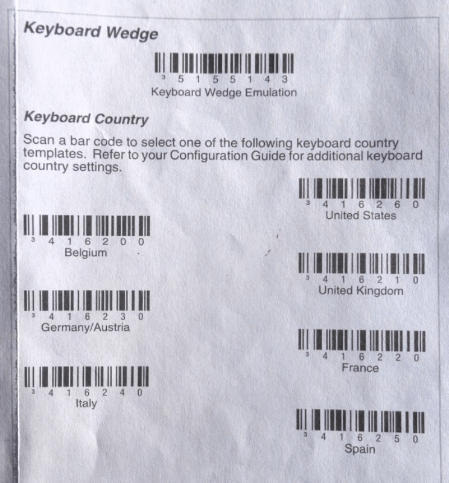

Getting started with barcode scanning in Odoo is fairly easy. Yet, a good user experience relies on an appropriate hardware setup. This guide will help you through the task of choosing and configuring the barcode scanner.
Find the barcode scanner that suits your needs
The 3 recommended type of barcode scanners to work with the Odoo Inventory and Barcode Scanning apps are the USB scanner, the bluetooth scanner and the mobile computer scanner.

- If you scan products at a computer location, the USB scanner is the way to go. Simply plug it in the computer to start scanning. Just make sure when you buy it that the scanner is compatible with your keyboard layout or can be configured to be so.
- The bluetooth scanner can be paired with a smartphone or a tablet and is a good choice if you want to be mobile but don't need a big investment. An approach is to log in Odoo on you smartphone, pair the bluetooth scanner with the smartphone and work in the warehouse with always the possibility to check your smartphone from time to time and use the software 'manually'.
- For heavy use, the mobile computer scanner is the handiest solution. It consists in a small computer with a built-in barcode scanner. This one can turn out to be a very productive solution, however you need to make sure that is is capable of running Odoo smoothy. The most recent models using Android + Google Chrome or Windows + Internet Explorer Mobile should do the job. However, due to the variety of models and configurations on the market, it is essential to test it first.
Configure your barcode scanner
Keyboard layout
An USB barcode scanner needs to be configured to use the same keyboard layout as your operating system. Otherwise, your scanner won't translate characters correctly (replacing a 'A' with a 'Q' for example). Most scanners are configured by scanning the appropriate barcode in the user manual.
Automatic carriage return
By default, Odoo has a 50 milliseconds delay between each successive scan (it helps avoid accidental double scanning). If you want to suppress this delay, you can configure your scanner to insert a carriage return at the end of each barcode. This is usually the default configuration and can be explicitly configured by scanning a specific barcode in the user manual ('CR suffix ON', 'Apply Enter for suffix', etc.).